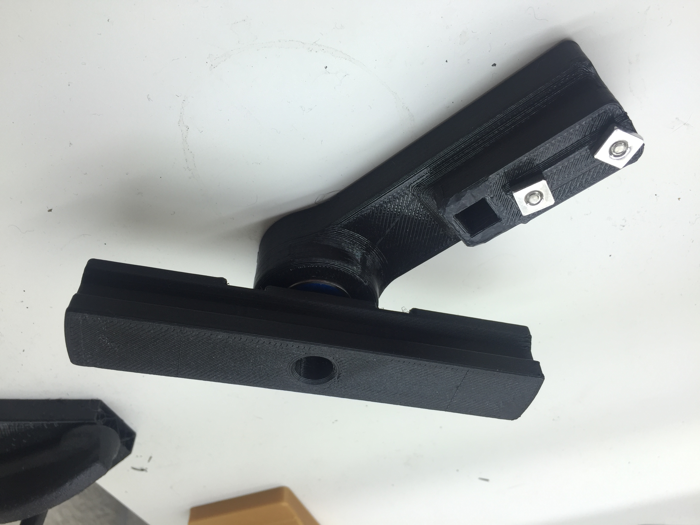

Icarus
Delta 3D Printer
Icarus is the 3D printer I've designed and built from scratch. She can print a 17" diameter circle by 17" in height and to make up for that giant volume she moves fast. How fast you ask? Check out the video below to find out.
She is constructed from a combination of milled aluminum extrusions and waterjet parts (It was really fun learning how to use the waterjet at Techshop) and stands around 1 meter in height. Her main computer is the fantastic smoothieboard, and she also has a Bondtech extruder to make sure the filament never strips. Basically all of the printed parts that you can find in my portfolio are printed by her, so she has been an invaluable tool.


